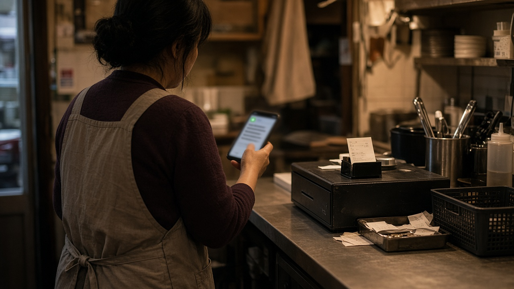
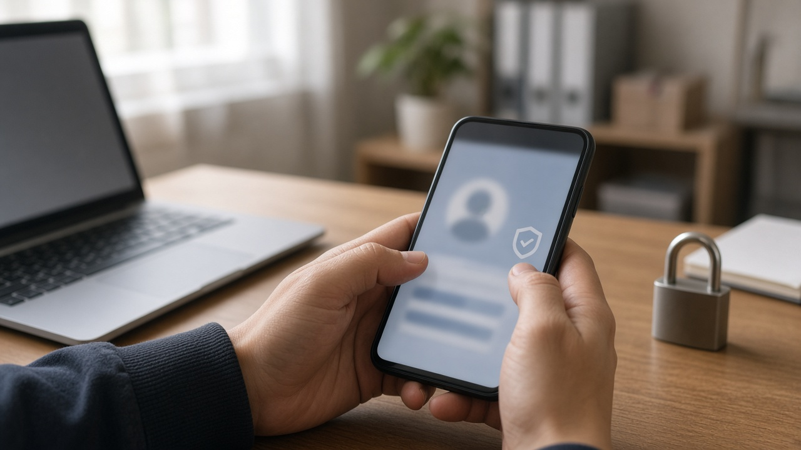
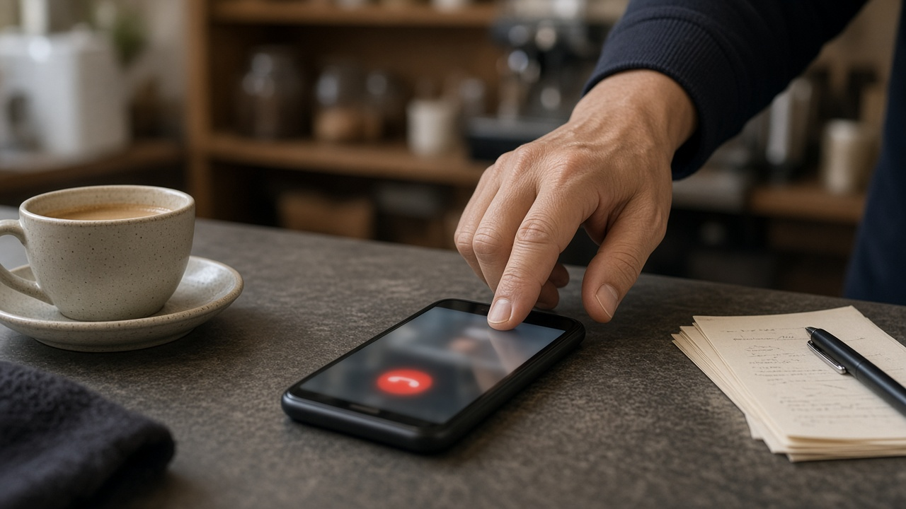

노란우산 홈페이지 해킹 의심, 주민번호 앞 7자리까지 조회됐을 수 있어 사장님들이 지금 확인할 것

가게를 하시면서 노란우산에 매달 부금을 넣고 계신 사장님이라면 요 며칠 문자 한 통 받으셨는지 먼저 떠올려 보세요.
중소기업중앙회가 11월 14일 노란우산 홈페이지에 외부의 비정상적인 접근이 있었고, 일부 고객 개인정보가 제3자에게 조회됐을 가능성이 있다고 공지했거든요.
노란우산 재적 가입자는 192만 명에 이르러서 소상공인이라면 남의 일이 아니에요.
무엇이 노출됐을 수 있는지, 내가 대상인지 어떻게 확인하는지, 앞으로 어떤 연락을 조심해야 하는지 차례로 정리해 볼게요.
무슨 일이 있었나, 11월 11일 홈페이지 비정상 접근
중기중앙회 공지에 따르면 11월 11일 노란우산 홈페이지에 외부 비인가자의 비정상적인 접근이 확인됐어요.
이 과정에서 일부 고객의 개인정보가 제3자에게 조회됐을 가능성이 확인됐다는 것이 핵심이에요.
다만 실제로 정보가 조회되거나 바깥으로 빠져나갔는지, 몇 명이 해당되는지는 아직 조사 중이라 유출이 확정된 상태는 아니에요.
중기중앙회는 공격에 쓰인 인터넷 주소를 차단하고, 조회에 이용된 것으로 의심되는 화면의 접근 통제를 강화했으며, 한국인터넷진흥원에 신고했다고 밝혔어요.

조회됐을 수 있는 정보, 주민번호 앞 7자리와 주소
공지된 항목은 성명, 주민등록번호 앞 7자리, 휴대전화번호, 자택 주소, 자택 전화번호, 이메일 주소, 문자와 이메일 수신 동의 여부예요.
주민등록번호 앞 7자리에는 생년월일과 성별이 들어 있어서 이름, 전화번호, 주소와 합쳐지면 나를 콕 집어 속이는 연락에 쓰일 수 있어요.
주민등록번호 뒷자리는 되돌릴 수 없는 방식으로 암호화해 관리하고 있다고 중기중앙회는 설명했어요.
또 이 항목들이 모든 사람에게 똑같이 해당하는 것은 아니고, 사람마다 일부 항목만 해당할 수 있어요.
내가 대상인지 확인하는 방법
중기중앙회는 지금까지 확인된 조회 의심 고객에게 개별 문자를 보냈어요.
문자를 받지 않은 고객은 현재까지 확인된 조회 의심 대상에는 들어가지 않는다고 안내했어요.
그래도 걱정된다면 노란우산 공식 홈페이지에 직접 들어가 휴대폰 본인확인을 거치면 내 정보의 조회 정황 여부와 항목을 개별로 볼 수 있어요.
이때 문자 속 인터넷 주소를 누르기보다 주소창에 노란우산 홈페이지를 직접 입력해 들어가는 편이 안전해요.
궁금한 점은 노란우산 고객센터 1666 9988로 물어보시면 되고, 평일 오전 9시부터 오후 6시까지 운영해요.

이런 전화와 문자는 응하지 마세요
이런 사고 직후에는 사고를 핑계로 한 사칭 연락이 따라오는 경우가 많아요.
노란우산은 전화나 문자로 돈이나 대출을 요구하지 않고, 납부 계좌 변경이나 계좌 비밀번호 입력도 요구하지 않는다고 밝혔어요.
홈페이지 자체가 계좌 비밀번호를 받지 않는다는 점도 분명히 했어요.
노란우산 직원이라며 아이디나 비밀번호를 입력하거나 바꾸라고 하는 연락에도 응하지 마세요.
출처를 알 수 없는 문자와 이메일의 인터넷 주소는 누르지 말고, 의심스러운 연락은 문자에 적힌 번호가 아니라 공식 고객센터 번호로 직접 걸어 확인하세요.
정리하면 이렇게 하세요
개별 문자를 받았다면 홈페이지에서 조회된 항목을 확인하고, 그 항목을 노리는 연락을 특히 조심하세요.
문자를 받지 않았더라도 조사 결과에 따라 대상이 늘 수 있으니 중기중앙회가 예고한 추가 공지를 챙겨 보세요.
중기중앙회는 실제로 조회되거나 유출된 고객에게는 해당 항목을 개별 안내하고, 아닌 것으로 확인된 고객에게도 알릴 계획이라고 했어요.
개인정보 침해 관련 신고와 상담은 국번 없이 118에서도 할 수 있어요.
참고 자료 노란우산 홈페이지 개인정보 유출 가능성 및 침해사고 공지 2026년 11월 14일 www.8899.or.kr, 연합뉴스 2026년 11월 14일과 15일 보도, 데일리시큐 2026년 11월 15일 보도
태그 노란우산 노란우산해킹 노란우산개인정보유출 중소기업중앙회 소상공인 개인정보유출 주민등록번호유출 스미싱주의 보이스피싱예방 개인정보침해신고